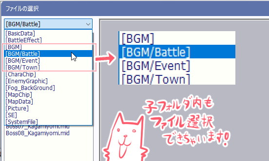
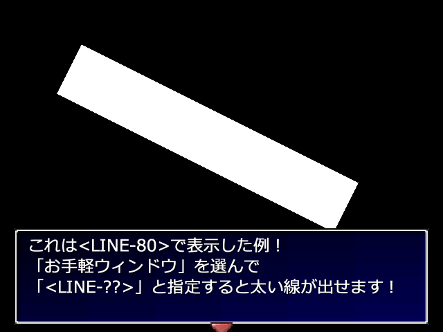

シルバーセカンド開発日誌
2024年05月
■
2024-05-25 (土) 近しい人の旅立ちを見送りました▼私にとって近しい人が新しい世界に旅立ってしまい、
今はその後の恐ろしい量の手続きに流されてしまっていて
創作やサポート周りなどは何かやれそうな状況ではありません！
この状況はしばらく続きそうです！
でもウディコン前にはだいぶ落ち着くはずなので、
第16回ウディコンは問題なく開催可能だと思います。
お楽しみに！
◆「喪主」に挑戦してみた！
なお、今回私は葬儀における「喪主（もしゅ）」に
挑戦してみたのですが、なかなか大変でした。
でも葬儀会社さんが大部分を担当してくれたので、
すごい難しいゲームほどではありませんでした。
知識がないところだけは
（というか知識がないところだらけだったんですが）
慎重さを要求される情報収集ゲームが発生してしまったので
緊張感はすごかったです。
知らないことも色々判断しなければなりません。
「分骨するか否か」なんて聞かれても
何も事前知識がなかったらどうすればいいのかわからないよ！
あと、普段文章を書かない人がごあいさつのスピーチを
やることになると急に創造性を求められて大変かもしれません！
私は得意なので大丈夫でしたが、なんでしたら
私がお世話になった葬儀会社さんでは司会の人が
それっぽい文章を考えて代行スピーチしてくれるサービスもあって、
とても親切でした。
幅広いスキルやリソースの人に対応したサービスがありがたい限りです。
また、普通の生活では知ることのない細かな作法も
スタッフさんがそのつど教えてくれましたが、
お焼香については礼する順番とか聞きそびれてアワワワってなってました。
喪主だと1番目にやるから他の人の真似ができないんですよ！

※まんまんちゃん：おおまかには「合掌（がっしょう、手を合わせる）」の意。
大阪の祖母からよく聞いた単語です。
◆人が亡くなった後の手続きの量がヤバい！
そして今は故人にかかわる、とんでもない量の手続きに圧倒されています。
時間制限付きのクエストがいきなり小さい文字びっしりで
5ページ分くらい発生した感じなので、緊急性のあるやつは急いで、
そうでないのは優先度の高いのを整理しつつ
一歩一歩がんばっていきたいと思います。
とはいえ、電話口や窓口の人も大半はみんな洗練されていたり、
自動音声サービスで目的の窓口まで
誘導してくれたりしていい時代です。
私は社会との繋がりが薄い生活をしていますが、
やはりどの会社さんも効率化やマニュアル化は
進められているんですよね！
でもたまにアタフタされている人もいらっしゃいます。
口座の凍結の電話をしたら口座番号も聞かずに
電話切っちゃいそうになってる方もいらっしゃったりして。
「プロ（として配置されてる人）でもそうなんだ！」
と思うとちょっと安心します（でも会社の教育体制や
自動化への取り組み具合は気になるかもしれません）
そしてせっかくなのでこの機会に、私の「電話」や
「手続き」スキルも上げていきましょう！ と思っています。
特に「電話」はWeb上のやり取りを好むようになってしまった
最近の生活だと意外とスキル上げしにくかったので、
将来の不安を消すためにも十分に復習・習得しておきたいですね。
一度十分に上げておけば、あまり使わなくても10年くらいは
電話する前に不安になったりはしにくくなるはずです！
ということで、しばらくはリアルの方をがんばっていきたいと思います！
しっかり片付けて、第16回ウディコンに備えます！ お楽しみに！ ■
2024-05-11 (土) 【ウディタ】セーブデータ軽量化やサブフォルダ読込▼リアルがとても大変になりつつある私です。
いちおう『片道勇者2』の開発を進めたり、
ウディタのバグ修正を続けたりとやることはやれているのですが、
次回あたり開発日誌が1回おやすみになるかもしれません。
今回は、また新たに実装したウディタの新機能や修正内容についてご紹介！
今回は地味ながら重要度が高い修正が複数あったので、
ここでアピールしておきます！
◆Ver3.33で搭載したウディタ新機能いろいろ！
【セーブデータ容量が大幅削減！】
今回の修正でセーブデータを圧縮してから保存するようにしました！
が、それによる容量の減り方が想像以上にすごかったです！
以下はフルパッケージに入っている
『ウルファールのサンプルゲーム』のセーブデータ一覧ですが、
従来のGame.exeで保存したのと
新バージョンで保存したのではファイルサイズが大違い！
システムデータは100KBから1KBに！
開始直後のセーブデータは206KBから14KBに！
みたいに、90％以上カットも平気で発生しうるほどの圧縮効果！
これならセーブデータ100個保存する人も少し安心！

基本的には複雑なデータ列であるほど圧縮が効きにくくなるので、
「0」のデータがいっぱい並んでいるであろう「システムデータ」や
「始まったばかりのセーブデータ」ほど圧縮がきいて
ファイルサイズが軽くなり、ゲーム終盤になるほど
重くなっていく感じになります。
上の画像でも、「クリア直前のSaveData02.sav（21KB）」の方が
「開始直後のSaveData01.sav（14KB）」より
ファイルサイズが大きくなっているのが分かると思います。
元はどっちも200KBくらいだったのに！
それでも「クリア時のデータサイズが80%カットできたよー」
というお声も見かけたりしたので、プレイヤーの人にとっても
うれしい修正のはずです。
安定してそうなタイミングになりましたら、よければぜひアップデートを！
【マップデータの容量も大幅削減！】
そしてこちらはあまり話題になっていませんでしたが、
セーブデータと同じ方式で圧縮するようにし、
『マップデータファイル（.mps）』のサイズも削減されました！
たとえばこれまでは3000×3000のサイズのマップを作ると100MB超の
サイズになってしまっていたのが、
新バージョンで保存すると最小で420KB程度になるほど
ファイルサイズが小さくなりました。約1/250！
ただしここまで縮められるのは、まだほとんど何も書いてないマップに限ります。
「圧縮・解凍処理なんて入ると逆に
読み込み遅くなったりするんじゃないの～？」
と思われるかもしれませんが、実はアクセス速度は
「SSDやHDDからの読み込み速度」より「メモリ内で解凍する速度」の方が
まだ早いので、これだけファイルサイズが縮めば、
ゲーム中での読み込み時間は巨大なマップであるほどよく改善されます。
また、読み込み処理もアルゴリズム的に改善したことで、
マップのそもそもの読み込み時間も少し短縮されているはずです。
これでオープンワールドゲームを作る人も安心！
【マップイベントに「前Page方向引継」機能を実装！】
「前Page方向引継」機能は、マップイベントの起動条件が変わって
ページが切り替わってもキャラの方向とパターンをそのまま維持する、
というオプションです。
どうしてこんな機能が実装されたかというと、
まず前提として、Ver3後のいつかのバージョンからバグ修正の都合で、
起動条件が変わってマップイベントのページが切り替わった場合、
必ず【新たなページ側で指定されている方向】に向き直るようになりました。
ですがマップイベントを活用したアクションゲームなどを作る場合、
「マップイベントが攻撃モーションに入るときは違うページに切り替える」
といった使い方をされる場合も考えられます。
でもページが変わると前述の通り、
キャラの向きがリセットされちゃう問題があります！
そういったときに、この「前Page方向引継」をオンにしておけば、
ページ切り替わり時でも向きが変わらず、方向維持したまま
自然にモードを切り替えられるわけですね！
これまでは、この問題に対して一手間かかる対処が必要だったのですが、
これからは少しシンプルな造りにできると思います。
【Editorの「ファイル選択」時、3層までの
サブフォルダが見られるように！】
ファイル選択時に、これまで1層のフォルダまでしか選べなかったのが、
3層までのサブフォルダを指定できるようになりました！
地味修正ですが作ってみると意外に便利！
たとえば「BGM」フォルダ内に「Battle」「Town」みたいに
サブフォルダを作ってそこにファイルを入れても、
これからは音声ファイル選択画面から直でファイルを探しにいけます！
↓

実装前は「えーこの機能いるー？」と思いましたが
（それに過去に一回挫折したのであんまりやりたくなかったのですが）、
いざ搭載してみるとファイル整理が楽！
次から使っていこうと思います。
【「変数操作+」コマンドに「キャラの不透明度」と
「ピクチャの基準位置」取得機能を追加】
「変数操作＋」コマンドで取得できる中で、
需要が高そうなのを2つ追加しました。
「キャラの不透明度」と「ピクチャの基準位置」です！
特に「ピクチャの基準位置」の方は、
コモンイベントを作って配布する人にとってはこれまでよりも
色んな状況に対応できるようになるので、利用価値が高いと思います。
というのも、「ゲーム作る側の人」は特定のピクチャの
基準位置がどこになっているか自分で知っているからいいのですが、
「配布コモンイベントを作る人」側だと
いま表示されてるピクチャの基準位置がどこなのか
これまで分からなかったので、作るのが困難な処理があったんですよね！
たとえば「ピクチャの当たり判定を得る」とか！
そういった点で、コモンイベント作者さまの助けになればと思います！
なお古いEXEだと当然この機能はないので、
コモンイベント配布時には「ウディタVer3.33以降で動作します」など
書いておいたり、動作バージョンが古くて使えない場合は
コモンイベント内から警告を出されるようにするのがおすすめです。
（「Sys115：[読]Game.exeバージョン(x100)」で動作バージョンの判定が可能です、
この値が333以上ならOK！）
ちなみに「ピクチャの基準位置」で得られる値は
【0左/10中央/20右 + 0上1中2下】という値になっています。
たとえば基準位置が「左上」なら左0+上0=「0」、
「中心」なら中央10+中1で「11」、
「右上」なら右20+上0=「20」が得られるわけですね！
どうしてこういう数値になっているのかというと、
プロい人が計算に使うときにたぶんちょっと便利だからです。
（各桁の「1」＝「画像の半分サイズ」として計算できる）
【ピクチャの特殊図形（隠し機能）に＜LINE-??＞を追加！
太線が描ける！】(これだけVer3.337で実装)
ピクチャの特殊図形機能（ピクチャの「お手軽ウィンドウ」に
「＜LINE＞」などと指定すると図形が描ける隠し機能）に
＜LINE-??＞が新たに追加されました！
これまでは1ピクセルの線しか描けませんでしたが
これを使うと太い線が描けます！

ひとまず簡素な太線を置きたい場合や、これを使っても
違和感のない雰囲気のゲームを作る場合に便利だと思います。
と、いう感じで今回もウディタの修正がんばっておりました！
いちおうその隙間時間で『片道勇者2』もちょびっとだけ
進められましたので、まとまった進捗ができたらご報告していきます。
そろそろウディタ改修についてはこれで一休みして、
しばらくバグ修正だけのモードに入ろうと思っています。
あんまりウディコン前に新機能や
それに付随するバグが増えても困るでしょうしね！
第16回ウディコン開催まであと2ヶ月ちょっとです！
みなさまの作品、今年も楽しみにお待ちしています！ 2024年05月
Copyright © SmokingWOLF / Silver Second
 カテゴリ: その他
カテゴリ: その他 カテゴリ: その他
カテゴリ: その他